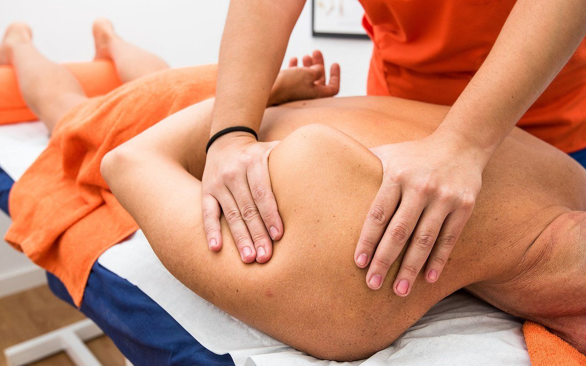

La sesión de osteopatía es siempre individual, en la que se establece un dialogo entre las manos del terapeuta y los tejidos del paciente. Consta de un primer tiempo evaluativo y un segundo tiempo terapéutico. En la primer parte el terapeuta se interesara por el estado de salud general y realizara una serie de test y palpaciones manuales para identificar las estructuras que han sufrido pérdida de movimiento o estrés mecánico. Una vez identificadas dichas estructuras se aplicaran las técnicas manuales pertinentes para normalizar la función y eliminar los síntomas del paciente.
Todo cambio brusco de uno o varios elementos en el interior del organismo comporta una confusión que este organismo intenta reducir para crear un nuevo orden, una nueva armonía que le sea favorable y le permita mantener un buen funcionamiento.
El traumatismo es el ejemplo típico de esa clase de trastorno a nivel mecánico. El terapeuta que trata su paciente busca y libera zonas de tensión, crea cambios en la organización mecánica del cuerpo. De ello resulta un cierto desorden. El cuerpo se ve obligado, después de esta modificación, a crear un nuevo equilibro. Un terapeuta que lleva bien su tratamiento posee técnicas de ajuste que permiten ayudar al organismo a mantener el mejor equilibrio posible a lo largo de la sesión. Será el organismo solo el que realice el trabajo de ajuste íntimo y profundo que el terapeuta no puede efectuar y para el cual se necesita un cierto tiempo.
La cantidad de sesionesvaría según la afección del paciente, la antigüedad de sus trastornos, su capacidad para restablecer rápidamente o no un mejor equilibrio, sus condiciones de vida, su capacidad para modificarlas, la edad, sexo y constitución de la persona.Además habrá que tener en cuenta la habilidad, pericia y experiencia del osteópata.
